| Trang gốc |
Vietnamese, with Unicode Times font |
|
|
Tường trình một chuyến
đi |
|
|
2. Th ăm viếng các chùa ở Việt Nam.N gày 6 tháng 12, 2002, tôi rời Perth đi Bangkok. Sau khi ngủ qua đêm tại Bangkok, tôi đáp máy bay đi Đà Nẳng. Vào thành phố Đà Nẳng vào giữa trưa, tôi nhờ một người bạn đưa đi thăm chùa Tam Bảo. Đây là một ngôi chùa khang trang, rộng rãi và ở trên đường Phan Chu Trinh, gần trung tâm thành phố. Mặt tiền chùa đang được sửa sang.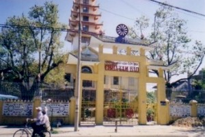 Tôi gặp Tỳ kheo Pháp Cao, trụ trì chùa, và xin phép vào chánh điện để lễ Phật.Sau đó, chúng tôi đi thăm chùa Non Nước (Ngũ Hành Sơn), và tham quan các cửa hàng tạc tượng đá. Sáng ngày hôm sau, chúng tôi đi tham quan Hội An và khu phố cổ. Sau đó, đến Cửa Đại để thăm chùa Nam Quang, một chùa Phật giáo Nguyên thủy cũng do Sư Pháp Cao quản lý và có vài chú Sa-di đang tu học tại đây. Sư tặng tôi các quyển Kinh Trung Bộ và Trường Bộ in từ trước năm 1975. Đây là một tài liệu quý vì các bản kinh đó được in trong dạng song ngữ Pàli-Việt với chú thích. Chúng tôi đi xe ra Huế. Trên đèo Hải Vân, chúng tôi dừng lại nhiều nơi, quan sát cảnh tượng bên đường và chụp ảnh. Từ trên đèo nhìn xuống biển, phong cảnh thật hùng vĩ và đẹp lạ lùng. Đến Huế th ì trời đã tối và bắt đầu mưa. Đây là lần đầu tiên tôi ra Huế, tưởng rằng cũng như trong miền Nam thì tháng 12 là tháng mát mẻ và khô ráo, ngờ đâu ngoài Huế thời tiết lại khác, và tháng nầy vẫn còn mưa bão.Sáng hôm sau, tôi gọi điện thoại để hẹn đến thăm Tỳ kheo Tuệ Tâm tại Tuệ Tĩnh Đường của chùa Diệu Đế. Sư Tuệ Tâm là một vị đông y sĩ, và là vị sư Nam tông duy nhất tại Tuệ Tĩnh Đường. Sau đó, tôi nhờ Sư điện thoại liên lạc với Tỳ kheo Pháp Tông, vị trụ trì chùa Huyền Không, và chỉ dẫn anh tài xế lái xe để đưa tôi đến chùa. 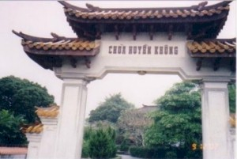Xe đưa tôi đi dọc bờ sông Hương, qua Thành Nội, đến chùa Thiên Mụ. Trời mưa tầm tả nên tôi chỉ nhìn thoáng qua rồi lên xe, tiếp tục đi, ngang qua Văn Miếu, và rẻ vào một con đường nhỏ để đến Huyền Không ở huyện Hương Trà. Chùa Huyền Không I là một chùa Nam tông mới được xây dựng sau nầy, có kiến trúc mang nhiều màu sắc Việt Nam, với cổng tam quan, mái ngói cong, lầu tám góc, vườn lan, v.v. Trong chánh điện chưng bày giản dị nhưng trang nghiêm, với tượng Đức Phật Thích Ca màu trắng, ngồi trong tư thế giảng pháp. Tôi quỳ lễ lạy Phật, tụng thầm một bài kinh Pàli ngắn, quán tưởng đến ân đức Tam bảo. Ngoài hiên có một chuông đồng rất lớn, trên đó có khắc bài kinh Từ Bi bằng tiếng Pàli và Việt. Tôi vào hầu chuyện với Sư Pháp Tông, và tôi rất hoan hỷ và tán thán các chương trình tu học, đào tạo Tăng tài và kế hoạch phát triển chùa. 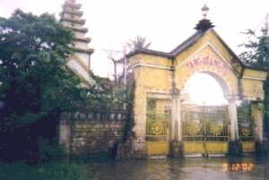Chúng tôi lên đường đến chùa Tăng Quang ở phường Phú Hiệp. Đây là chùa Nam tông đầu tiên tại Huế. Vị trụ trì hiện nay là Tỳ kheo Định Lực. Mặc dù không được khỏe, ngài vẫn vui vẻ tiếp tôi, và đã kể cho tôi rất nhiều chuyện về cuộc đời tu hành của ngài và về lịch sử của ngôi chùa nầy. Ngài còn tặng tôi những quyển sách tóm tắt Phật Pháp, và các tập thơ đạo do ngài viết ra. Từ giả Sư Định Lực, chúng tôi tiếp tục cuộc hành hương đến thăm chùa Thiền Lâm ở huyện Hương Thủy. Vị sư thiết lập và trụ trì chùa là ngài Hòa thượng Hộ Nhẫn, vừa mới viên tịch hai tháng trước. Ngài cũng là vị Tăng trưởng của hệ phái Nam tông. Tôi vào lễ Phật tại chánh điện, rồi vào một gian nhà kế bên, nơi đặt bàn thờ ngài Hộ Nhẫn, thắp hương, lễ lạy ngài. Chùa Thiền Lâm tọa lạc trên đồi cao với diện tích đất khá rộng. Dù trời mưa, tôi vẫn cố gắng đi dạo quanh, đến lễ lạy bảo tháp và các tượng Phật ngoài trời, và đến thăm mộ ngài Hộ Nhẫn. Sáng hôm sau tôi trở lại chùa Huyền Không I để thăm Tỳ kheo Giới Đức. Ngoài các dịch phẩm Phật Pháp, ngài còn viết nhiều tập thơ đạo, với bút hiệu Minh Đức Triều Tâm Ảnh. Tiếc rằng trời vẫn còn mưa, đường lầy lội, nên tôi không thể đến thăm viếng chùa Huyền Không II trên núi. Tôi ở lại Huyền Không I để dùng cơm chay vào buổi trưa, và có dịp nói chuyện với các anh chị em cư sĩ hộ tăng, hộ tự tại chùa. Sau đó, tôi có đến hầu chuyện với Sư Giới Đức. Tôi rất vui mừng khi được ngài hoan hỷ hứa gửi cho tôi các tập tin vi tính của các tác phẩm và dịch phẩm đã được xuất bản trong thời gian qua. Tôi chỉ lưu lại Huế có 3 ngày, trời lại mưa tầm tả, nên không thể đi tham quan các lăng tẩm, các di tích lịch sử của cố đô. Tuy nhiên, tôi rất mãn nguyện là đã cố gắng đi thăm được các chùa Phật giáo Nguyên thủy, và đã được gặp và tiếp chuyện với các vị Tỳ kheo. Đó là mục đích chính của chuyến đi ra Đà Nẳng và Huế trong lần này. * * * Rời Huế, đáp máy bay vào Sài Gòn ngày 11 tháng 12, 2002. Trời Sài Gòn nắng ấm, nhưng không gay gắt. Sinh ra và lớn lên tại thành phố này, mỗi lần về đến Sài Gòn tôi đều thấy vui rộn ràng, như thể trở về một nơi quen thuộc và gần gũi. Tối hôm đó, tôi điện thoại liên lạc với Sư Thiện Minh, chùa Kỳ Viên, để sắp đặt cho các công tác cứu trợ và chương trình thăm viếng các chùa. Hôm sau, Sư Thiện Minh đưa tôi đi thăm viếng các chùa ở vùng Long Thành. Trên xe còn có anh Lâm Hoàng Lộc, giám đốc nhà xuất bản và nhà sách Trí Tuệ, và anh Lê Quang A, giám đốc công ty vi tính 3C. Đầu tiên chúng tôi đến thăm chùa Tam Phước. Vị sư trụ trì là Tỳ kheo Chánh Định, một vị sư trẻ đã từng đi du học ở Ấn Độ, rất nhiệt tình và vui vẻ, và tôi đã quen biết Sư trong lần về thăm Việt Nam năm trước. 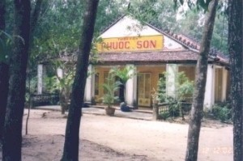Chúng tôi đến thăm Thiền Viện Phước Sơn, tuy mới thành lập sau nầy, nhưng rất nổi tiếng trong giới Phật giáo Nam tông. Đây là nơi để các Phật tử đến hành thiền, ngắn hạn vài ngày cho đến dài hạn trong nhiều tháng. Thỉnh thoảng cũng có Phật tử Việt ở hải ngoại về đây để tu thiền. Vị sư trụ trì là Tỳ kheo Bửu Chánh, hiện đang hoàn tất chương trình Tiến sĩ Phật học ở Ấn độ. Cả hai lần về Việt Nam và đến viếng Phước Sơn, tôi đều có duyên may được gặp Sư Bửu Chánh, nhân dịp Sư về Việt Nam trong lúc nghỉ hè. Thiền viện tọa lạc trong một khu rừng mát mẻ và yên tĩnh, có một dòng suối chảy ngang. Tại đó, ngoài chánh điện và giảng đường, còn có một thiền đường là nơi các thiền sinh đến để hành thiền tập thể. Mỗi thiền sinh ở từng cốc liêu riêng biệt, sạch sẽ, với các tiện nghi cần thiết. Chúng tôi ở lại dùng cơm trưa. Sau đó, tôi xin phép Sư để được làm lễ cúng dường một bộ đại y mà tôi mang theo từ Perth, đến chư Tăng. Đây là lần đầu tiên tôi có được phước duyên để dâng y đến chư tăng Việt Nam. Trên đường về Sài Gòn, chúng tôi ghé qua thăm chùa Bửu Long thuộc phường Long Bình, quận 9, và gặp vị trụ trì là Tỳ kheo Viên Minh. Chùa nầy đầu tiên là do Ngài Hộ Tông thành lập, và về sau, ngài viên tịch ở đó. Chùa là tổ đình của hệ phái Nam tông. Nơi đây, ngoài tăng đoàn, chùa còn thiết lập một ni viện dành cho các vị tu nữ. Chánh điện và tịnh thất của các Sư có lối kiến trúc rất đẹp, mang màu sắc Việt Nam. Chúng tôi được hầu chuyện với Sư Viên Minh khá lâu và đàm luận về nhiều đề tài Phật Pháp rất thú vị và hữu ích. Tôi còn được ngài tặng cho những quyển sách vừa mới xuất bản. Chúng tôi đi dạo quanh, tham quan cảnh chùa, viếng động Bồ Tát đang xây dựng, và đến viếng tháp của ngài Hòa thượng Hộ Tông, và tháp ngài Tỳ kheo Lão Tâm (Võ Hà Thuật) là vị thí chủ cúng dường đất để cất chùa khi ngài còn là cư sĩ tại gia.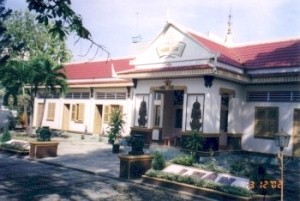 Sáng ngày 13 tháng 12, tôi nhờ người cháu họ là tài xế taxi đưa tôi đến viếng các chùa Phật giáo Nguyên thủy khác. Đầu tiên, chúng tôi đến viếng chùa Nam Tông thuộc huyện Bình Chánh. Vị trụ trì là Tỳ kheo Thiện Hạnh, một trong những vị giảng sư trẻ của hệ phái. Sau khi lễ Phật, tôi được Sư đưa đi thăm các cơ sở của chùa. Chùa có diện tích đất khá rộng, trong vùng tương đối yên tĩnh. Với các cơ sở phòng ốc như hiện nay, nếu đầy đủ điều kiện thuận lợi, có thể dùng để làm trường Phật học hoặc làm một trung tâm hành thiền, thư dãn tâm trí cho các cư sĩ Phật tử tại thành phố. 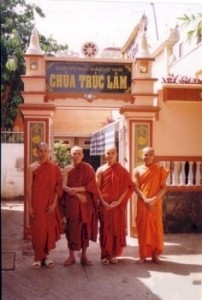Sau đó, chúng tôi đến thăm chùa Trúc Lâm thuộc Quận 6 và gặp vị trụ trì là Tỳ kheo Phúc Hỷ. Chùa có diện tích đất tương đối nhỏ, nhưng rất khang trang, và có những vị Tỳ kheo trẻ đang tu học. Chùa hiện có kế hoạch để trùng tu, phát triển. Tôi được Sư trụ trì tặng cho những tấm ảnh ghi lại các sinh hoạt chính trong chùa, để làm tư liệu cho trang Phật học. Buổi trưa hôm đó, chúng tôi đi về mạn Thủ Đức, đến viếng chùa Bửu Quang ở Gò Dưa, ngôi chùa đầu tiên của Phật giáo Nguyên thủy Việt Nam. Vị trụ trì là Tỳ kheo Thiện Nghiêm đã sang Miến Điện tu học. Bây giờ chỉ có vài vị tu nữ lớn tuổi chăm sóc chùa. Tôi xin phép vào chánh điện lễ Phật và đi dạo quanh chùa, suy tưởng đến công lao hoằng pháp của các vị tiền bối, truyền bá đạo Phật Nguyên thủy đến cho người Việt trong hơn sáu thập niên trước. Sau đó, tôi ghé sang tịnh thất kế bên chùa để thăm Hòa thượng Bửu Hạnh và thăm hỏi vài vị Tỳ kheo trẻ đang lo chăm sóc ngài. Tiếp tục cuộc hành trình, chúng tôi đến quận Gò Vấp để viếng chùa Từ Quang. Vị trụ trì đi vắng, nhưng tôi gặp được hai vị Tỳ kheo gốc Khmer, nói chuyện rất vui vẻ và thân mật. Hai vị sư trẻ nầy đang tạm trú ở đây để tu học. Sau đó, tình cờ tôi gặp được Tỳ kheo Pháp Tân đang ngồi uống trà ngoài sân chùa. Quả là một duyên may vì năm trước, chúng tôi có viếng thăm chùa Thái Hòa ở Định Quán, tỉnh Đồng Nai, mà vị trụ trì, Sư Pháp Tân, hôm đó lại đi vắng. Trưa hôm nay, không hẹn trước mà tôi lại được gặp Sư tại nơi nầy. Trên đường đi, tôi ghé qua tòa sạn báo Giác Ngộ để đóng thêm tiền báo. Từ 6 năm qua, các số tuần báo và nguyệt san được gửi đều đặn đến tôi mỗi tháng 2 lần. Nhờ đó, tôi biết nhiều thông tin Phật sự và các bài pháp luận giá trị. Bước sang nhà sách kế bên, tôi mua thêm vài quyển kinh sách mới. Số lượng sách Phật giáo xuất bản gia tăng rất nhiều và chất lượng in ấn đã cải tiến rõ rệt so với những năm trước. Tối hôm đó tôi đến chùa Kỳ Viên, Quận 3, để lo sửa soạn các tặng phẩm cho chuyến đi cứu trợ ở An Giang. Đồng thời tôi cũng tham dự lễ trao học bổng cho các học sinh nghèo trong phường. Sau khi các quan khách ra về, tôi ở lại chùa để xin phép làm một buổi lễ nhỏ, dâng các bộ đại y mà tôi đã mang theo từ Perth đến chư Tăng trong chùa. 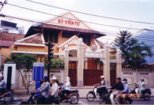Chùa Kỳ Viên là ngôi chùa Nam tông đầu tiên mà tôi đến tiếp xúc khi về thăm Việt Nam trong những năm trước, và từ đó có nhiều liên lạc để xin thỉnh kinh sách, tư liệu Phật học, thông tin Phật sự. Ngày trước, chùa là trụ sở của Giáo hội Phật giáo Nguyên thủy VN, nên có một vị trí quan trọng trong lịch sử của hệ phái Nam tông. Ngày nay, chùa vẫn giữ được các sinh hoạt Phật Pháp thường xuyên, và rất đông Phật tử đến tụng niệm, nghe Pháp, hành thiền, học Vi Diệu Pháp,v.v, nhất là vào ngày Chủ nhật và các ngày Bố tát. Vị trụ trì là Tỳ kheo Tăng Định và phó trụ trì là Tỳ kheo Thiện Minh. Dù Phật sự đa đoan, Sư Thiện Minh rất nhiệt tình giúp chúng tôi bố trí tổ chức các công tác từ thiện và các chuyến hành hương thăm viếng chư Tăng và các chùa Phật giáo Nguyên thủy. Ngày hôm sau, 14 tháng 12, chúng tôi lên đường đi Châu Đốc, An Giang, để phát quà cứu trợ cho đồng bào bị lũ lụt, như đã tường thuật trong Phần 1 ở trên. Sáng ngày Chủ Nhật 15 tháng 12, tôi đi xe taxi đến Thiền Viện Vạn Hạnh ở Phú Nhuận, cũng là trụ sở Học viện Phật giáo VN, để nghe thuyết giảng. Đây là buổi thuyết giảng hàng tuần dành cho các cư sĩ. Giảng sư hôm nay là Đại đức Thích Giác Đồng. Không khí buổi thuyết giảng rất nghiêm túc, và ban tổ chức có một hệ thống thu âm rất tốt, để Phật tử có thể thỉnh các băng âm thanh cassette đem về nghe lại sau buổi giảng. Tôi có đến phòng riêng của Thầy Giác Đồng để thăm Thầy. Thầy đã từng gửi nhiều tài liệu Phật học cho trang Phật học BuddhaSasana. Tôi cũng ghé qua phòng phát hành kinh sách và thỉnh mua nhiều sách và đĩa CD Phật giáo. Trưa hôm đó, tôi đến vùng Tân Định, để thăm một nhóm anh chị em cư sĩ tu học kinh điển. Tôi rất hoan hỷ khi được biết quý anh chị đó có những sinh hoạt thường xuyên để học tập, thảo luận về các chuyên đề trích ra từ bộ kinh tạng nguyên thủy. 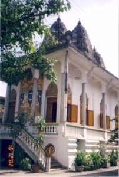Ngày hôm sau, 16 tháng 12, theo lời mời của một đạo hữu vừa mới quen là anh Danh Sóc, tôi đến thăm chùa Chandaramsya ở gần dốc cầu đường Trần Quốc Thảo (ngày trước là cầu Trương Minh Giảng) thuộc Quận 3. Đây là ngôi chùa của các Phật tử gốc Khmer. Anh Sóc giải thích "Chanda" là mặt trăng, "Ramsya" là ánh sáng, "Chandaramsya" có thể dịch là "Nguyệt Quang". Tôi gặp Tỳ kheo Danh Lung Ekasuvanna, trụ trì chùa, và được mời ở lại dùng cơm trưa. Nhờ đó, tôi có dịp được nghe các sư tụng kinh bằng tiếng Pàli và tiếng Việt - ở đây tất cả mọi người đều nói chuyện với nhau bằng tiếng Việt, rất rành rõi. Ngoài ra, tôi có hẹn để gặp ông bà Đức từ Hoa Kỳ về thăm Việt Nam. Ông bà là song thân của Tỳ kheo Khemavaro, một vị sư người Mỹ gốc Việt, xuất gia thọ đại giới ở Thái Lan, và hiện đang tu học tại Perth, Tây Úc. Tôi kể cho ông bà nghe về các hoạt động Phật giáo tại Perth, và mời ông bà đến thăm viếng Tây Úc khi thuận tiện. Trưa hôm đó tôi đến trụ sở Hội Bảo trợ Bệnh nhân Nghèo để trao tiền tài trợ chi phí phẫu thuật cho 20 em bé bị dị tật sứt môi như đã tường thuật ở trên, trong Phần 1. Sau đó, tôi được anh Danh Sóc đưa đi thăm một chùa Khmer khác là chùa Bodhivamsa Pothivong thuộc quận Tân Bình. Đây là một ngôi chùa nhỏ, đang được trùng tu, và vị trụ trì là Tỳ kheo Tăng Ngọc An Pannasaro, còn trẻ, rất vui tính và thân thiện. Tiếp theo, chúng tôi đến viếng chùa Diệu Quang hiện đang được Sư cô Diệu Hiền quản lý. Sư cô đã tham gia trong chuyến đi cứu trợ ở An Giang mấy ngày trước. Tôi rất cảm động khi được Sư cô cho phép tôi thỉnh các quyển kinh sách mà Sư cô đã cất giữ trong hơn 20 năm qua. Đây là những tư liệu rất quý giá mà ngày nay rất khó tìm thấy. Sư cô còn tặng tôi băng cassette thu âm các bài tụng căn bản, để tôi hoán chuyển đưa vào mạng và vào đĩa CD Phật học. Ngày 17 tháng 12, tôi nhờ cháu tôi lái xe đến gặp Sư Chánh Định ở chùa Tam Phước, Long Thành, để Sư hướng dẫn đi thăm các chùa trong vùng. Huyện Long Thành thuộc tỉnh Đồng Nai có hơn 10 ngôi chùa thuộc hệ phái Nam tông. Đầu ti ên, chúng tôi đến thăm Tỳ kheo Minh Huệ tại chùa Phước Hộ. Đây là một ngôi chùa nhỏ, rất yên tịnh. Sư Minh Huệ là một vị sư đã dịch nhiều bộ kinh nguyên thủy sang Việt ngữ, nhưng cho đến nay chỉ có vài dịch phẫm đã được xuất bản. Tôi may mắn được Sư dành nhiều thì giờ để bàn về các công trình dịch thuật của Sư, cũng như các kinh nghiệm hành thiền.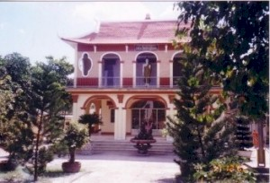Rời chùa Phước Hộ, chúng tôi đến thăm chùa Thiền Quang I. Vị trụ trì là Tỳ kheo Thiện Pháp. Sư Thiện Pháp là một trong những vị sư đầu tiên đến hoằng pháp và cất chùa tại vùng nầy. Trong các chuyến đi cứu trợ từ thiện đều có Sư tham gia và hướng dẫn. Chùa Thiền Quang tọa lạc trên một khu đất khá rộng và có thiết kế rất mỹ thuật, bố cục cân đối và ngăn nắp. Ngoài chánh điện còn có các liêu thất dành cho chư tăng, bảo tháp, lầu chuông, thư viện, trai đường, và nhà bếp. Chúng tôi ở lại dùng cơm trưa tại chùa, và sau đó, tôi được Sư tặng cho các tấm ảnh chụp các sinh hoạt tại chùa để làm tài liệu. Tôi rất hoan hỷ khi được Sư hứa sẽ tổ chức thu âm vào băng cassette các bài tụng của chư Tăng để tôi phổ biến trên mạng. Sau đó chúng tôi đến thăm Chùa Phước Huệ, một ngôi chùa nhỏ trong huyện Long Thành, khu Cầu Xeo, gần quốc lộ 51. Vị trụ trì là Tỳ kheo Tâm Hỷ. Tiếp tục chuyến đi, chúng tôi đến Bà Rịa, vùng Núi Dinh, để thăm viếng Thiền viện Viên Không. Cảnh trí ở đây rất đẹp và thanh tịnh, rất thích hợp cho công phu độc cư tu thiền. Vị trụ trì là ngài Tỳ kheo Hộ Pháp, đã từng tu học ở Thái Lan và Miến Điện trong 30 năm. Ngài đã soạn nhiều sách về pháp thiền nguyên thủy của Đức Như Lai và các sách phổ thông khác. Tôi cũng được gặp Tỳ kheo Pháp Thông, là người đã dịch nhiều quyển sách Phật Pháp giá trị. Tôi rất hoan hỷ khi được quý Sư hứa tiếp tục hỗ trợ cho thư viện điện tử Phật học BuddhaSasana. Tối hôm đó, tôi được mời đi viếng chùa Bửu Đà, trong vùng Hòa Hưng, Quận 10. Nơi đây, hằng tuần có tổ chức thu âm đọc kinh Pháp Cú do Đại đức Thích Minh Thiền tổ chức. Tôi rất khâm phục sự làm việc hăng say của nhóm đọc kinh, mặc dù với các phương tiện kỹ thuật còn khiêm tốn. Chùa Bửu Đà nay đã phát triển rộng lớn, trong chánh điện có một tượng Phật bằng đồng nặng 6 tấn, cao hơn 4 mét. Ngày nay chùa đã đổi khác rất nhiều, tôi không còn nhận ra được nữa, mặc dù ngày xưa tôi thường đi bộ ngang chùa trên đường đến trường tiểu học. Sáng ngày 20 tháng 12, tôi thuê xe taxi đến chùa Pháp Bảo thuộc huyện Thủ Đức, cạnh xa lộ Biên Hòa, để gặp Tỳ kheo Tâm Hạnh. Chùa Pháp Bảo là một chùa Bắc tông, có thực hiện chương trình dịch Đại tạng từ chữ Hán sang Việt. Sư Tâm Hạnh đã dịch nhiều quyển Luật mà tôi đã lưu trữ vào thư viện điện tử. Tôi rất vui mừng khi được Sư cho biết dù bận rộn trong việc dạy học, Sư vẫn tiếp tục công trình dịch thuật đó, và Sư cho tôi những lời khuyên quý báu trong các công tác Phật sự. 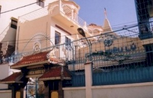Ngày 21 tháng 12, gia đình chúng tôi đến chùa Siêu Lý ở Phú Lâm để dự lễ cầu siêu 49 ngày cho Tỳ kheo Tịnh Thân, trụ trì chùa. Năm ngoái tôi đến chùa thăm ngài và được nghe ngài giảng giải về Vi Diệu Pháp. Năm nay khi trở lại đây, ngài đã viên tịch. Chư Tăng tham dự rất đông, và tôi được dịp đãnh lễ Tỳ kheo Giác Chánh, trụ trì chùa Bửu Đức (Biên Hòa), và Tỳ kheo Giác Giới, trụ trì chùa Siêu Lý (Vĩnh Long). Đồng thời, gia đình chúng tôi có xin hùn phước, dâng 5 bộ đại y đến chư Tăng. Trưa hôm đó, Sư Thiện Minh hướng dẫn chúng tôi đến thăm các cô nhi viện tại chùa Pháp Võ ở Nhà Bè, và chùa Kỳ Quang ở Gò Vấp. Ngày 22 tháng 12, chúng tôi lên đường đi Nha Trang. Trên đường đi, khi đến thành phố Phan Thiết, chúng tôi tìm vào viếng chùa Bình Long. Vị sư trụ trì là Tỳ kheo Trí Phước, và vị phó trụ trì là Tỳ kheo Chánh Thọ. Chùa nằm trên một đồi cao, nhìn xuống biển, phong cảnh rất đẹp. Chùa vừa được giao trả về cho Phật giáo Nguyên thủy, các cơ sở xuống cấp trầm trọng, và đang kêu gọi đóng góp kinh phí để trùng tu. Đến Nha Trang, chúng tôi viếng ch ùa Long Sơn, vào lễ Phật tại chánh điện, và đi lên đồi cao phía sau chánh điện, đến lễ lạy Phật đài lộ thiên. Đứng trên đồi cao nhìn ra biển, phong cảnh thật hùng vĩ. Chùa đang được sửa sang lại, quang cảnh đẹp và ngăn nắp hơn mười năm trước, khi tôi đến thăm Nha Trang vào năm 1992.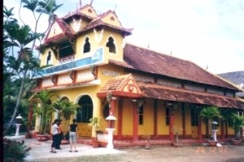Trở về Sài Gòn ngày 25 tháng 12. Sáng hôm sau, ngày 26 tháng 12, chúng tôi lên đường đi về Gò Công thuộc tỉnh Tiền Giang để viếng thăm mộ phần cha mẹ, ông bà. Trên đường đi, chúng tôi ghé vào thị trấn Tân Hiệp, đến thăm và lễ Phật tại chùa Phước Hải. Vị trụ trì ở đây là Tỳ kheo Pháp Ngộ, và chúng tôi xin được nhiều tấm ảnh ghi lại các hoạt động vừa qua tại chùa. Chùa này do ngài Hòa thượng Ẩn Lâm sáng lập, và đang trong giai đoạn trùng tu sau nhiều năm hoang phế. Sáng ngày 27 tháng 12, tôi hẹn gặp anh Pháp Đăng, một phóng viên trẻ của báo Giác Ngộ, để trình bày các công tác Phật sự và từ thiện xã hội trong thời gian qua. Chiều hôm đó, gia đình chúng tôi đến chùa Kỳ Viên từ giả chư Tăng, để sáng hôm sau lên đường sang Bangkok, Thái Lan. Nhìn lại trong thời gian 3 tuần lễ lưu lại Việt Nam, chúng tôi đã có phước duyên được quý chư Tăng Ni và thân hữu Phật tử nhiệt tình giúp đỡ để đi viếng thăm 32 ngôi chùa - trong đó có 26 chùa Phật giáo Nguyên thủy, từ thành phố Huế cho đến tỉnh Tiền Giang. -ooOoo- Trang trước | Ðầu trang | Trang kế [Trở
về trang Thư Mục] |